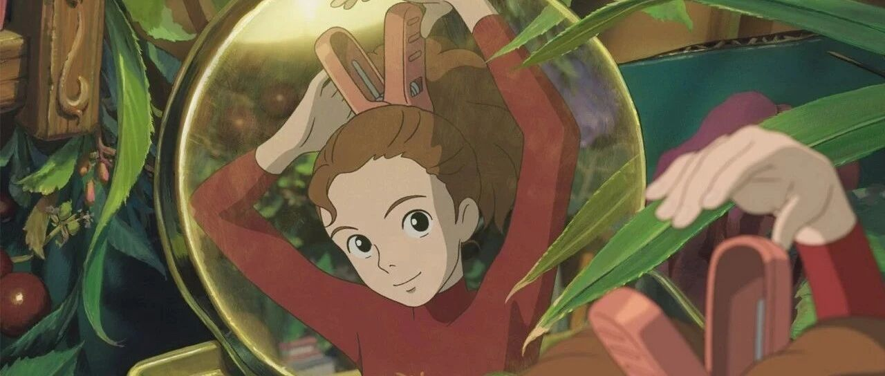

告诉你们一个秘密吧！
点击关注秋秋很开心
每周一篇好用APP、学习、成长干货

图：@网络
文：@秋秋
大家好，我是秋秋～
今天要和大家聊一些不为人知的小秘密。
那就是很长的一段时间里，我过的并不开心。
那是从我大学毕业到做自媒体之前的这段时间，我觉得自己一直在奔跑，很焦虑、没有喘息的空间。
那段时间因为家庭原因，我需要自己支付房租、生活费，还要边读研究生边工作，为了多赚一点钱，我还要不停的兼职。
我很感激那段时光，却一点不想回到过去。

我对金钱很没有安全感，银行卡里静静躺着的数字，好像不是我要花的钱，而是带给我安全感的来源。
经常我有一种感觉就是，我一个人，站在悬崖边上，如果跌下去将没有任何东西可以托住我。
我会想再努力一点、再努力一点。
那时候我的副业已经远超过我的工资，但我却一点不敢停下来。
这些事我也很少对我身边的人讲起。姑且让大家看到光鲜亮丽的一面吧，有时候很多事不说、再开口也不知从何谈起。
而从毕业开始，这种恐慌感，就伴随了我整整三年。
最近我读了也大分享的一篇文章，《已经攒下 4000 万了，但我还是不敢退休》。
这篇文章的作者，存款肯定是很多的。但他真的不是凡尔赛，而是非常焦虑。
我才发现，其实和存款多少没有关系，而是这种心态，让我们从此不快乐。
什么心态？
在努力的过程中，我们只想着快点到终点，而忘记了最初的目的。
比如我，想攒钱是因为没安全感，说白了是害怕交不起房租、没钱吃饭、上不了学。
但归根结底，在乎这些事都是想成为更好的自己，想要更幸福的生活。

而我做了什么？
睡不好觉、状态不好，因为兼职上课也不好好听，周末不出门，还经常脾气和小王吵架。
我本想奋斗，让自己有安全感、生活的更好。
但在整个过程中，我却一步步远离快乐。
我们现在的努力奋斗，真的是为了有朝一日能坐下来纯粹享福吗？
还是当下的幸福就很重要？
前几天，我打赏了一篇文章，对我影响很大。
作者是张君。
他学历可能算不上很高那种，但却靠自己开了公司、实现了人生的小跨越，很爱思考我很钦佩。
在文章中，他说自己最初创业那几年经常加班，忽视了家人，自己也不快乐。
后来他想明白，自己的努力奋斗就是为了给家人提供更好的生活，就是为了有更多时间来陪伴女儿。

所以之后，不管他再怎么忙，都不会牺牲和家人在一起的幸福时光，这才是他奋斗的前提。
之前有一个故事，说一个富豪坐在海边度假，喝喝啤酒吹吹海风很快乐。
旁边有个渔民，也在吹海风、喝啤酒很快乐。
富豪就问他，你为什么不多打些鱼，存起来，这样以后就能不用风吹日晒，喝喝啤酒度假呢？
渔民说，不用以后，因为我现在就已经做到了啊！

这个故事很绝对，渔民没有未雨绸缪，所以如果老了打不动鱼其实没有一点收入。
而且打鱼受到天气影响也很大，如果不劳动并不能产生被动收入。（精神还是值得鼓励的）
但是，把所有的心思都放在工作上，忽视了当下的幸福也不是一个可取的做法。
张君的文章中说：
既然努力的目的是为了让自己和家人得到更好的生活，那么在行动、努力、拼搏、向上的过程中，有一个重要的限制条件，就是不能以牺牲生活和快乐作为代价。
这样的话，日子只能越来越好。
我们的奋斗，一定是有个目的。
而那个目的，就应该成为我们的限制条件。
任何时候，都不能牺牲这个来作为代价。
因此，渔民的正确做法是：不要丢失在海边吹吹风度度假的快乐。
而是在自己捕鱼的工作时间里，多专研一下技术；
在自己工作的时间里，设法捕到更多的鱼。
想明白这点后，我也豁然开朗。
我当下的努力也是为了能生活的更自在、能和家人在一起更快乐。
所以任何时候，我都不能以牺牲这些为代价，而是在我工作的时候，把效率提上去。

很长一段时间，我觉得自己越来越努力，但是心情却越来越不好。
现在，我终于想明白了。
我知道，在努力奋斗的你们，也可能会陷入这种迷茫和焦虑中去。
为什么自己很努力，但是家人却不能理解？
为什么比以前赚的钱多了，但是却越来越不快乐？
希望在你努力的过程中，也能够回望最初的目的，而不是只顾奔跑。
如果努力的目的是为了让自己和家人得到更好的生活，那么在行动、努力、拼搏、向上的过程中，有一个重要的限制条件：
就是不能以牺牲生活和快乐作为代价。
与你共勉。
☕️ 更 多 内 容：


原创文章，转载请告知本人并标注来源
粉丝vx：qiuqiu5261（朋友圈更新日常）
商务合作：17865514429 （微信）
请注明来意 :)
@小红书：秋秋很开心
喜欢记得星标，让我们一起成长